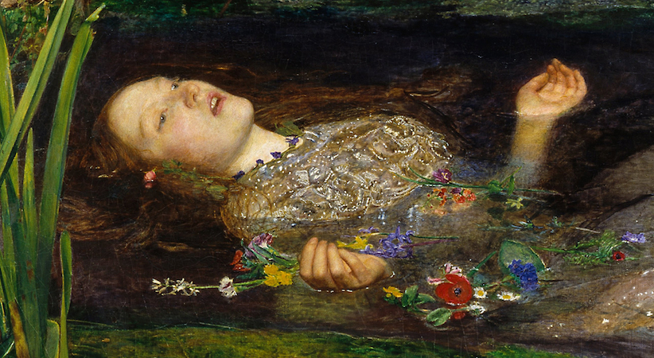

Who We Are?
we are art lovers! .. some collectors find that acquiring a work of art is similar to falling in love. There is a flash of recognition (I like it!), the heart beats faster (I want it!), then desire overshadows all other emotions (I can't live without it!). If all goes well - in love and in art - yearning is followed by happily-ever-after.
Why Ophelia?
Ophelia is a character in William Shakespeare's drama Hamlet. She is a young noblewoman of Denmark, the daughter of Polonius, sister of Laertes, and potential wife of Prince Hamlet,hamlet always wanted to revenge and the love she had for him wasn't enough to forgive his enemies, ophelia tried hard to save her lover from himself but she failed, so she decided to kill herself by throwing herself in the river after she went mad.. ophelia was an art lover and music lover too, she chose to leave this god-forsaken world but her picture is always bring good..
